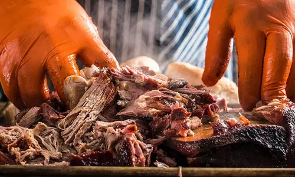

Pulled Pork

Smoke it low, smoke it slow. Perfect pulled pork is worth the wait, and this versatile BBQ meat can be served any way you like.
Ingredients:
- 1 (6-9 Lb) Bone-In Pork Shoulder
- 2 Cup Apple Cider
- Traeger Pork & Poultry Rub
- Traeger 'Que BBQ Sauce
Steps:
- When ready to cook, set Traeger temperature to 250℉ and preheat, lid closed for 15 minutes.
- While the Traeger comes to temperature, trim excess fat off pork butt.
- Generously season with Traeger Pork & Poultry Rub on all sides and let sit for 20 minutes.
- Place the pork butt fat side up directly on the grill grate and cook until the internal temperature reaches 160℉, about 3 to 5 hours.
- Remove the pork butt from the grill.
- On a large baking sheet, stack 4 large pieces of aluminum foil on top of each other, ensuring they are wide enough to wrap the pork butt entirely on all sides. If not, overlap the foil pieces to create a wider base. Place the pork butt in the center on the foil, then bring up the sides of the foil a little bit before pouring the apple cider on top of the pork butt. Wrap the foil tightly around the pork, ensuring the cider does not escape.
- Place the foil-wrapped pork butt back on the grill fat side up and cook until the internal temperature reaches 204℉, in the thickest part of the meat, about 3 to 4 hours longer depending on the size of the pork butt.
- Remove from the grill. Allow the pork to rest for 45 minutes in the foil packet.
- Remove the pork from the foil and pour off any excess liquid into a fat separator.
- Place the pork in a large dish and shred the meat, removing and discarding the bone and any excess fat. Add separated liquid back into pork and season to taste with additional Traeger Big Game Rub. Optionally, add Traeger 'Que BBQ Sauce or your favorite BBQ sauce to taste.
- Serve alone, in your favorite recipes, or on sandwiches. Refrigerate leftover pork in a covered container for up to 4 days. Enjoy!